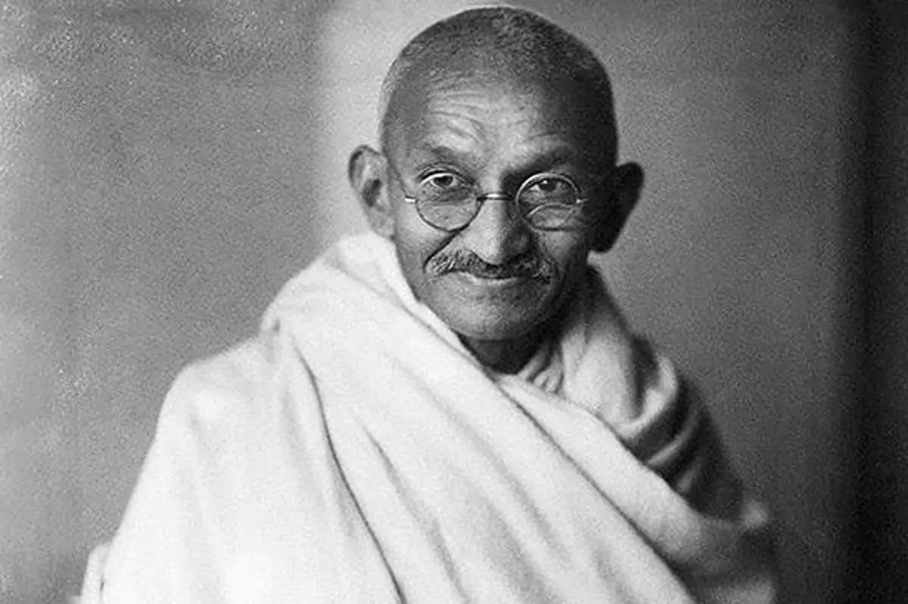

Mahatma Gandhi was born on October 2, 1869 in Probandar, present-day Gujrat in India. As an indian immingrant in England, he had gotten beat up a few times for refusing to give up his seat, and other pitiful acts. At this point in life, he realized how unfair the world really was. His first peaceful protest which would last up to eight years, was when an order came out for the registration of England's Indian population by the Transvaal government. However, his most famous movement was known as the Salt March. He was unfortunately murdered by a Hindu fanatic in 1948, at age 79. After his death, one milion people followed the proccesion of his funeral.
Mahatma Gandhi is my hero because he freed India under British control, giving India so many rights that they did not have before. My homeland is Gujrat, where Mahatma Gandhi was born. A good portion of my family still lives in India, but without Mahatma Gandhi, I might not have been here in Carmel California, and had a luxurious life along with an amazing school district. A common saying is, "Life isn't fair." Which is true, no denial their, but Mahatma Gandhi figuratively took this quote, and changed it around, freeing India. "Life isn't fair, but what can you do about it to make it a bit more fairer for everybody."
